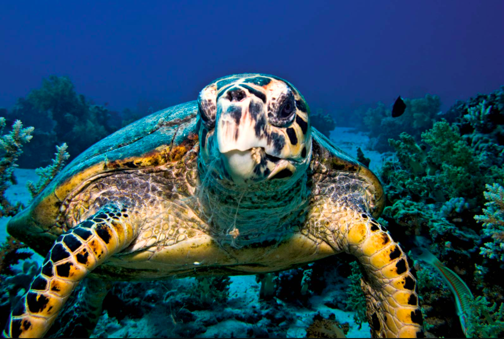
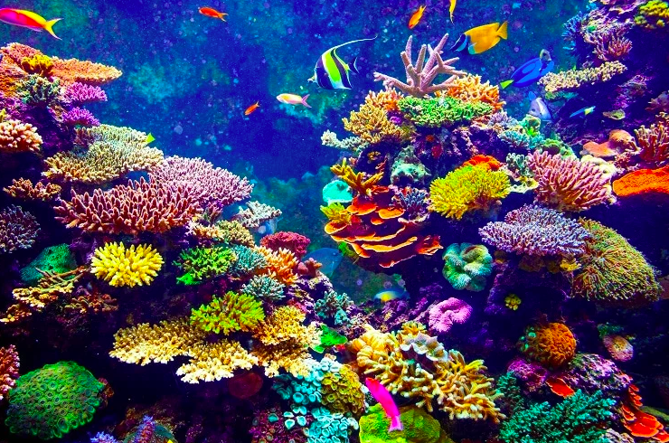
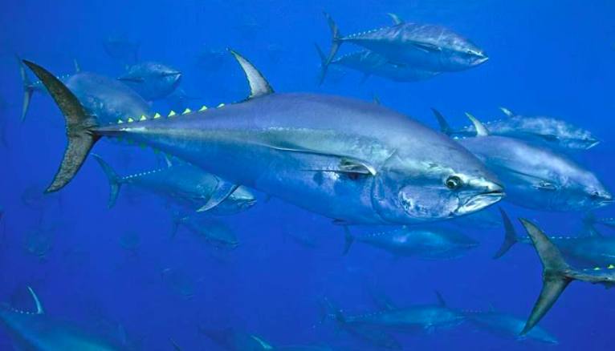
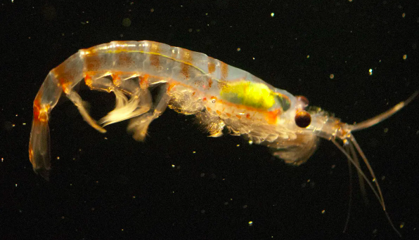

Currently, commercial fishing is the largest problem facing sea life. Studies have shown that commercial fishing has reduced the fish population. This population drop is due to the catching of untargeted marine life. These species are hauled on to the deck of ships and die from the lack of water. This can kill anything from turtles to sharks. Many animals and people are treated poorly on these ships and some scientists suggest that even fish farming is an inhumane practice. One thing you can do to help make a change is consume less fish in your diet.
Seas are continuosly transforming into a plastic soup, killing animals who ingest the water. This happens when plastic waste is disgarded in the ocean. Overtime the plastic breaks down into microplastics, which kill fish and remain in their flesh, moving slowly up the food chain until every animal has consumed it. Furthermore, when we consume fish we are also eating these microplastics.
Many fertilizers and pestocides used in agriculture eventually seap into the ocean, harming thousands of marine creatures. Some of these products cause irreversible and fatal changes to the species; for example, they affect the reproduction process. This also has effects on us as the fish we eat, if contaminated can have negative health side effects.
Aquaculture refers to the rearing of animals in the sea for food. This refers to farming fish or invertebrates. Currently, there are a number of issues with sustainable aquaculture. For example, in salmon fishing the food used to feed the salmon is made up of biproducts and salmon fish oil. However, from the amount of fish oil used in the feed some of said oil must come from unsustainable sources. The production of fish and bivalves also involves the use of antibiotics and other chemicals, some of them toxic to the ecosystem.
Construction, deep hole drilling, and other human-related interventions cause acute changes to marine habitats and generates pollutants. This is evident in oil spills and fires where thousands of fish, birds and sea mammals are killed. These factors contribute to the destruction of the natural element and compromise the survival of marine life.
Animals Most at Risk From Marine Destruction

The Whale Shark
458 remaining in the Philipines, whale sharks are highly valued on international markets. Demand for their meat, fins and oil remains a threat to the species, particularly by unregulated fisheries

The Hawksbill Sea Turtle
There are less than 25,000 Hawksbills remaining in the wild due to a loss of nesting ground and bycatch. Bycatch is where turtles are caught on commerical fishing boats and thrown back dead.

Whales
Presently there are approximately 75,000 whales left in the world. However, in some regions of the world whales are still hunted for their bones, blubber and baleen which have various uses.

Coral Reefs
Coral reefs are dying around the world. Damaging activities include coral mining, pollution (organic and non-organic), overfishing, blast fishing and the digging of canals.

Bluefin Tuna
There is not an exact estimate as to the number of blue fin tuna remaining however, their population is suffering due to over fishing and pirated fishing. Pirated fishing is when fisherman catch an illegal number of tuna, or in a protected area.

Krill
There are billions of krill left on earth, however their numbers have been steadily decreasing. This is most likely due to the need for krill in feeding farmed fish. As the number of fish farmeries increase the number of krill go down.
The Whale Shark
458 remaining in the Philipines, whale sharks are highly valued on international markets. Demand for their meat, fins and oil remains a threat to the species, particularly by unregulated fisheries
The Hawksbill Sea Turtle
There are less than 25,000 Hawksbills remaining in the wild due to a loss of nesting ground and bycatch. Bycatch is where turtles are caught on commerical fishing boats and thrown back dead.
Whales
Presently there are approximately 75,000 whales left in the world. However, in some regions of the world whales are still hunted for their bones, blubber and baleen which have various uses.
Coral Reefs
Coral reefs are dying around the world. Damaging activities include coral mining, pollution (organic and non-organic), overfishing, blast fishing and the digging of canals.
Bluefin Tuna
There is not an exact estimate as to the number of blue fin tuna remaining however, their population is suffering due to over fishing and pirated fishing. Pirated fishing is when fisherman catch an illegal number of tuna, or in a protected area.
Krill
There are billions of krill left on earth, however their numbers have been steadily decreasing. This is most likely due to the need for krill in feeding farmed fish. As the number of fish farmeries increase the number of krill go down.